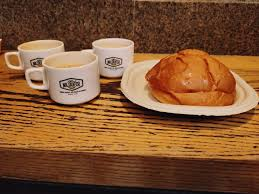
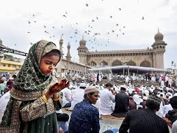
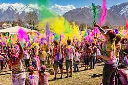
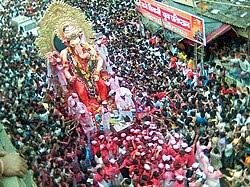
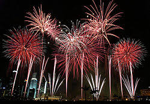

Food & Culture
Hyderabad is well known for its cuisine and cultural festivals. A few highlights.
Hyderabadi Biryani
A fragrant, layered rice and meat dish with centuries old recipes and many regional variations.

Irani Chai & Bakeries
Old Irani cafes and bakeries are part of the city's food heritage strong tea and soft buns.
Festivals
Hyderabad celebrates many festivals - ramadan/Eid, Holi,Diwali, and Ganesh Chaturthi among others showing its cultural diversity.
   